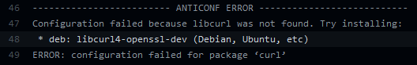
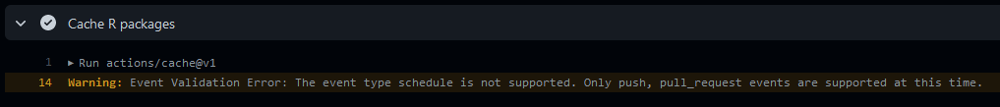

R setup
library(tidyverse)Scheduling data retrieval and updating with GitHub Actions and cron.
Taylor Dunn ![]()
January 22, 2022
This is part 3 of working with Canadian COVID-19 data via the tracker API. In the previous post, I detailed the development of the canadacovid package which was recently published on CRAN. Here, I will set up GitHub Actions to periodically download data from the API. Much of what I do here was learned from Simon Couch’s great tutorial on the subject and this bookdown project “GitHub Actions with R”.
Since writing this post, I’ve put this data pipeline to use with a Shiny dashboard reporting and visualizing the latest Canadian COVID-19 numbers. Check out the dashboard here, and the source code here.
I want a scheduled task that periodically (every hour?) runs a script to check the API for updated COVID-19 data (overall numbers and by province). If there is updated data, then store it on GitHub. I also want to keep the API requests to a minimum if possible.
The R script to accomplish this will fairly simple, but it is essential to be very explicit about assumptions when running code remotely. I could use something like renv or a Docker container, but the best way to declare minimal dependencies for a piece of R code is to use a package. I’ll call it canadacoviddata and make it quickly with usethis:
This sets up the necessary files and folder structure, and initializes the repository on GitHub for me. A couple more commands I usually run for R packages:
I know ahead of time two packages I will definitely want for downloading the data (my own canadacovid) and wrangling it (dplyr), so I add them as dependencies:
I then run devtools::document() and push the changes to GitHub.
The first data I want is the provinces table:
Rows: 13
Columns: 10
$ id <int> 1, 2, 3, 4, 5, 6, 7, 8, 9, 10, 11, 12, 13
$ code <chr> "ON", "QC", "NS", "NB", "MB", "BC", "PE", "SK", "AB", "NL"…
$ name <chr> "Ontario", "Quebec", "Nova Scotia", "New Brunswick", "Mani…
$ population <int> 14826276, 8604495, 992055, 789225, 1383765, 5214805, 16431…
$ area <int> 917741, 1356128, 53338, 71450, 553556, 925186, 5660, 59167…
$ gdp <int> 857384, 439375, 44354, 36966, 72688, 295401, 6994, 80679, …
$ geographic <lgl> TRUE, TRUE, TRUE, TRUE, TRUE, TRUE, TRUE, TRUE, TRUE, TRUE…
$ data_status <chr> "Reported", "Reported", "No report expected today", "Repor…
$ updated_at <dttm> 2022-10-21 18:09:07, 2022-10-26 23:09:04, 2022-08-15 16:52…
$ density <dbl> 16.15518540, 6.34489886, 18.59940380, 11.04583625, 2.4997…Add the script R/download-data.R which will hold all the functions:
I also need a place to store the data. In an R package, the main options are the data and data-raw folders. Files in data are “internal” will be automatically loaded upon loading the package (library(canadacoviddata)), while those in data-raw are external but are available to users via system.file("extdata", "provinces", package = "canadacoviddata"). See the data chapter of the R Packages book for more information. I’ll go with data-raw:
A very simple function to download and save the data to the data-raw/ folder could look like this:
And there is nothing wrong with this function, but I’m going to use a package I’ve been meaning to try: pins.
pinspins allows me to store R objects remotely (on boards), and retrieve and update that data when necessary. For example, create a temporary board (that will be deleted once the R session ends):
Pin board <pins_board_folder>
Path: 'C:/Users/tdunn/AppData/Local/Temp/RtmpwrfMl5/pins-2c2862845a0c'
Cache size: 0Then save provinces to the board:
Creating new version '20221027T182338Z-0f5f4'
Writing to pin 'provinces'Then retrieve it:
# A tibble: 13 × 10
id code name popul…¹ area gdp geogr…² data_…³ updated_at
<int> <chr> <chr> <int> <int> <int> <lgl> <chr> <dttm>
1 1 ON Ontario 1.48e7 9.18e5 857384 TRUE Report… 2022-10-21 18:09:07
2 2 QC Quebec 8.60e6 1.36e6 439375 TRUE Report… 2022-10-26 23:09:04
3 3 NS Nova S… 9.92e5 5.33e4 44354 TRUE No rep… 2022-08-15 16:52:42
4 4 NB New Br… 7.89e5 7.14e4 36966 TRUE Report… 2022-08-15 16:50:10
5 5 MB Manito… 1.38e6 5.54e5 72688 TRUE No rep… 2022-10-20 22:17:34
6 6 BC Britis… 5.21e6 9.25e5 295401 TRUE Report… 2022-10-20 22:50:19
7 7 PE Prince… 1.64e5 5.66e3 6994 TRUE Report… 2022-08-15 16:50:27
8 8 SK Saskat… 1.18e6 5.92e5 80679 TRUE No rep… 2022-10-21 10:51:04
9 9 AB Alberta 4.44e6 6.42e5 344812 TRUE Report… 2022-10-26 23:18:23
10 10 NL Newfou… 5.21e5 3.74e5 33241 TRUE No rep… 2022-08-15 16:50:18
11 11 NT Northw… 4.55e4 1.18e6 4730 TRUE No rep… 2022-08-15 16:50:34
12 12 YT Yukon 4.30e4 4.74e5 3046 TRUE Report… 2022-08-15 16:51:21
13 13 NU Nunavut 3.94e4 1.94e6 3421 TRUE No rep… 2022-08-15 16:51:02
# … with 1 more variable: density <dbl>, and abbreviated variable names
# ¹population, ²geographic, ³data_status
# ℹ Use `colnames()` to see all variable namesUsing a pins board to store data has a few advantages, like versioning and caching to avoid excessive computations and downloads. Another nice feature is that I can easily get metadata, like when the data was created:
List of 11
$ file : chr "provinces.rds"
$ file_size : 'fs_bytes' int 874
$ pin_hash : chr "0f5f40fd893b97a5"
$ type : chr "rds"
$ title : chr "provinces: a pinned 13 x 10 data frame"
$ description: NULL
$ created : POSIXct[1:1], format: "2022-10-27 14:23:00"
$ api_version: num 1
$ user : list()
$ name : chr "provinces"
$ local :List of 3
..$ dir : 'fs_path' chr "C:/Users/tdunn/AppData/Local/Temp/RtmpwrfMl5/pins-2c2862845a0c/provinces/20221027T182338Z-0f5f4"
..$ url : NULL
..$ version: chr "20221027T182338Z-0f5f4"pins has numerous options for storing boards, including RStudio Connect, Amazon S3, and Google Cloud Platform. I want to keep this package and the data in the same repository, so I’ll register a board on this GitHub repository. Unfortunately, I have to use the legacy pins API for this task, because GitHub boards haven’t been implemented in the modern API as of me writing this:1
Now write the provinces data:
The data get immediately pushed to the GitHub repository (under the data-raw/provinces/ directory) in both CSV and RDS formats:
To incorporate this into the package, I’ll first add pins as a dependency:
Then add a function to register_github_board()2 and re-write download_provinces(). The R/download-data.R script now looks like this (with some added roxygen documentation):
#' Register the pins board
#'
#' The `pins::board_register_github()` function requires a GitHub personal
#' access token be available through the environment variable `GITHUB_PAT`.
#'
#' @export
#' @importFrom pins board_register_github
register_github_board <- function() {
pins::board_register_github(
name = "github", repo = "taylordunn/canadacoviddata", path = "data-raw",
token = Sys.getenv("GITHUB_PAT")
)
}
#' Retrieve and pin the provinces data
#'
#' Retrieves the `provinces` data from the Canadian COVID-19 tracker API
#' and uploads it to the given `pins` board.
#'
#' @param board The name of the `pins` board to write the data.
#'
#' @export
#' @importFrom canadacovid get_provinces
#' @importFrom pins pin
download_provinces <- function(board = "github") {
canadacovid::get_provinces() %>%
pins::pin(name = "provinces", board = board)
}Now that the functions are in place, I need to tell GitHub when and how to use them. For setting up GitHub actions, I first add the folders and files:
.github/workflows/ directory.^\\.github$ to .Rbuildignore (because it does not need to be part of the installed package)..github/workflows/update-data.yaml file.At the top of the update-data.yaml file, I need to define the frequency at which the workflow is run. I think I want data to be updated every hour at minute 0. The cron expression to specify this schedule looks like this:
From left to right, the "0 * * * *" string corresponds to:
0: at minute 0 of the hour.*: every hour.*: every day.*: every month.*: every day of the week.Defining the jobs was mostly copy and paste:
jobs:
update-data:
runs-on: ${{ matrix.config.os }}
name: ${{ matrix.config.os }} (${{ matrix.config.r }})
strategy:
fail-fast: false
matrix:
config:
- {os: ubuntu-latest, r: 'release'}
env:
R_REMOTES_NO_ERRORS_FROM_WARNINGS: true
RSPM: ${{ matrix.config.rspm }}
GITHUB_PAT: ${{ secrets.GITHUB_TOKEN }}
steps:
- uses: actions/checkout@v2
- uses: r-lib/actions/setup-r@master
with:
r-version: ${{ matrix.config.r }}
http-user-agent: ${{ matrix.config.http-user-agent }}
- uses: r-lib/actions/setup-pandoc@master
- name: Query dependencies
run: |
install.packages("remotes")
install.packages("sessioninfo")
install.packages("devtools")
saveRDS(remotes::dev_package_deps(dependencies = TRUE), ".github/depends.rds", version = 2)
writeLines(sprintf("R-%i.%i", getRversion()$major, getRversion()$minor), ".github/r-version")
shell: Rscript {0}
- name: Cache R packages
uses: actions/cache@v1
with:
path: ${{ env.R_LIBS_USER }}
key: ${{ runner.os }}-${{ hashFiles('.github/r-version') }}-1-${{ hashFiles('.github/depends.rds') }}
restore-keys: ${{ runner.os }}-${{ hashFiles('.github/r-version') }}-1-
- name: Install dependencies
run: |
remotes::install_deps(dependencies = TRUE)
shell: Rscript {0}
- name: Update data
run: |
devtools::load_all(".")
register_github_board()
download_provinces()
shell: Rscript {0}The interesting bits, from top to bottom:
remotes and sessioninfo packages for downloading and managing dependencies, and the devtools package for load_all().canadacoviddata package (as defined in the DESCRIPTION file).The R code to download the provinces data is simply three lines:
I pushed the workflow to GitHub and patiently waited about 20 minutes for the hour mark (probably should have made the workflow more frequent for quicker development/iteration) et voila:
Failure. The error at the bottom tells me that the pins package was not found. It definitely should have been installed because it is explicitly listed under Imports of the DESCRIPTION file, so something must have gone wrong upstream. Digging into the logs, I found that the errors began with installing the curl package:

After some Googling, I found that I could install the missing liburl library on the Ubuntu runner by adding the following step in the workflow YAML (before “Query dependencies”):
Another problem with the workflow was that the R packages were not being cached as expected. It didn’t cause the workflow to fail, but it was taking ~13 minutes per run. This was the warning returned in the cache step:

I found this GitHub issue and response from the authors, and the solution to update the version of the cache action:
This cut down the workflow run time to ~8 minutes.
A list of provinces isn’t exactly the point of this post, which is to continuously retrieve COVID-19 data. The reason I started with provinces is for the updated_at variable:
ON QC NS
"2022-10-21 18:09:07 CST" "2022-10-26 23:09:04 CST" "2022-08-15 16:52:42 CST"
NB MB BC
"2022-08-15 16:50:10 CST" "2022-10-20 22:17:34 CST" "2022-10-20 22:50:19 CST"
PE SK AB
"2022-08-15 16:50:27 CST" "2022-10-21 10:51:04 CST" "2022-10-26 23:18:23 CST"
NL NT YT
"2022-08-15 16:50:18 CST" "2022-08-15 16:50:34 CST" "2022-08-15 16:51:21 CST"
NU
"2022-08-15 16:51:02 CST" This timestamp tells me when the province/territory last reported their COVID-19 data. By comparing new and old timestamps, I can query the API only when there is updated data, and avoid excessive requests. Here is the re-written download_provinces():
download_provinces <- function(board = "github") {
old_provinces <- pins::pin_get("provinces", board = board)
new_provinces <- canadacovid::get_provinces()
updated_provinces <- new_provinces %>%
dplyr::anti_join(old_provinces, by = c("name", "updated_at"))
if (nrow(updated_provinces) > 0) {
pins::pin(new_provinces, name = "provinces", board = board)
}
return(updated_provinces$code)
}In addition to saving provinces to the pins board, this function now returns a list of provinces which have been updated since the last workflow run. Then a new function takes the list of provinces, retrieves the latest reports from the API, and writes it to the pins board:
download_reports <- function(provinces_codes, board = "github") {
for (prov in provinces_codes) {
if (prov == "overall") {
new_report <- canadacovid::get_reports("overall")
} else {
new_report <- canadacovid::get_reports(province = prov)
}
new_report <- new_report %>%
dplyr::mutate(
change_active = .data$change_cases - .data$change_recoveries -
.data$change_fatalities,
total_active = .data$total_cases - .data$total_recoveries -
.data$total_fatalities,
positivity_rate = .data$change_cases / .data$change_tests
)
pins::pin(new_report,
name = paste0("reports_", tolower(prov)), board = board)
}
}I also compute some extra variables here that I am interested in: change_active (estimated change in active cases), total_active (estimated total cases), and positivity_rate (percentage of tests which were postivie for COVID).
Then to incorporate the new functionality, I update the workflow script:
After letting this run for a while, here is how the data-raw folder on the GitHub repo looks:
Note how the age of the files is different between provinces/territories (“3 hours ago”, “9 hours ago”, etc), which shows that the selective data retrieval is working.
Thanks to some great R packages and online resources, it wasn’t too hard to set up a simple ETL (extract, transform, load) pipeline that periodically runs with GitHub actions.
To see the full version of the workflow, check it out on GitHub here.
setting value
version R version 4.2.1 (2022-06-23 ucrt)
os Windows 10 x64 (build 19044)
system x86_64, mingw32
ui RTerm
language (EN)
collate English_Canada.utf8
ctype English_Canada.utf8
tz America/Curacao
date 2022-10-27
pandoc 2.18 @ C:/Program Files/RStudio/bin/quarto/bin/tools/ (via rmarkdown)Local: main C:/Users/tdunn/Documents/tdunn-quarto
Remote: main @ origin (https://github.com/taylordunn/tdunn-quarto.git)
Head: [4eb5bf2] 2022-10-26: Added font import to style sheet@online{dunn2022,
author = {Taylor Dunn},
title = {Canada {COVID-19} Data in {R:} Scheduling {API} Queries},
date = {2022-01-22},
url = {https://tdunn.ca/posts/2022-01-22-canada-covid-19-data-in-r-scheduling-api-queries},
langid = {en}
}